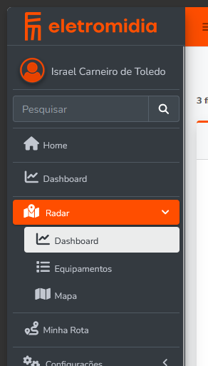
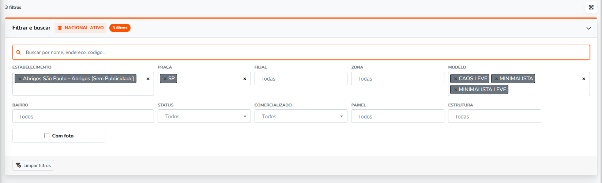

Antes
React 19, TypeScript, Vite, Tailwind. Auth própria com senha client-side. Dados via Google Apps Script e Google Sheets. Deploy separado no Vercel. Uma aplicação paralela para operar.
Do conceito à aprovação em 34 dias. Nativo em /radar com a mesma sessão, mesma permissão, mesmo deploy. Nada de app paralelo, login próprio ou proxy separado.
O Radar nasceu como app React/Vercel/Google Sheets. Agora roda dentro do Operações.
React 19, TypeScript, Vite, Tailwind. Auth própria com senha client-side. Dados via Google Apps Script e Google Sheets. Deploy separado no Vercel. Uma aplicação paralela para operar.
/radar dentro do Operações. Laravel 8, Blade, Vue 3, Vuex 4, AdminLTE. Mesma sessão, mesma policy, mesmo deploy. Lista, mapa, dashboard e detalhe.
PR #876 aceito. 123+ testes, 5600+ asserções. Cache web-authoritative, sem comandos Artisan. Web Worker para o mapa. Todos os estabelecimentos do Operações.
De 22/04 a 29/05: 6 cenários avaliados, 1 decisão, 1 PR aceito.
William e Doglas concordaram: espalhar operações entre dois sistemas vira espaguete. O cenário E (módulo nativo) eliminou toda a complexidade de integração que consumiu 2 semanas de planejamento. Mesma stack que o time já conhece: Blade + Vue 3 + AdminLTE. William pode manter. Doglas aprova. 3 semanas de esforço vs 4-5 do API-First.
Quatro superfícies a partir de um filtro compartilhado.
Equipamentos/pontos com filtros operacionais: praça, estabelecimento, filial, zona, busca textual. Paginação server-side.
Leaflet + Supercluster em Web Worker. Até 100k pontos. Agrupamento de co-localizados com carousel. Popup lazy.
KPIs, distribuição por zona/abrigo, GChart. Cache de 15 min. IDs internos ocultos do JSON público.
Opções dinâmicas que se adaptam ao escopo atual. Cross-filtering: dropdowns refletem o resultado filtrado. Cache de 6h (skip quando busca ativa).
A fronteira que garante que filtros de tela não ampliam acesso.
escopo configurado ∩ permissões do usuário ∩ filtros de request
Filtros de tela só estreitam o resultado. Nunca ampliam concessão, praça ou estabelecimento. Se o usuário pede um filtro fora do escopo, o resultado fica vazio.
Usuário com aliases radar-* mas sem filtros de pontos-menu recebe dados vazios, não fallback para SP. Implementado e testado.
JSON público do dashboard não inclui establishment_ids nem excluded_establishment_ids. Só metadados públicos: concessão, praça, cidade.
Usuário com permissão só de mapa não recebe/call endpoint de dashboard. Cada superfície é independente.
CSV, array e scalar convertem para o mesmo formato. Cache key determinística. Ambiente removido do contrato de filtro.
24 comentários, 10 dias de trabalho, uma aprovação.
| Categoria | Qtd | Status |
|---|---|---|
| Frontend (Vue/cleanup) | 5 | Corrigido |
| Backend (boundaries) | 4 | Corrigido |
| Permissões/escopo | 4 | Corrigido |
| Performance (mapa) | 3 | Corrigido |
| Cache/operação | 3 | Corrigido |
| UI/polish | 3 | Corrigido |
| Claims Vue 2 (incorretos) | 2 | Refutado |
action() helper para URLs@can directive no Blade; var → const/letO que mudou no mapa, no cache e na carga inicial.
Supercluster KD-tree moveu para Web Worker dedicado. Browser continua pintando frames durante construção do índice.
Query enxuta: 7 campos, sem JOIN, raw builder. Limite padrão alto. Seguro com worker off main thread.
Dashboard e mapa disparam em paralelo via Promise.all. Sequenciamento: filtros → dashboard+mapa.
Antes: cada termo de busca criava entrada de 6h. Keyspace ilimitado. Agora: $request->filled('search') bypassa o cache totalmente. Cross-filtering preservado.
Cold cache: primeira request popula, outras servem stale. Lock de 10s previne thundering herd. Sem comandos Artisan, sem Jobs.
Seleção dos commits que moldaram o estado final.
Escopo vazio retorna dados vazios, não default SP.
Dashboard JSON não expõe establishment_ids.
Map-only não chama endpoint de dashboard.
radar:cache:warm, radar:health, radar:cache:clear removidos.
Stale-while-refresh com lock de 10s.
Filtros → dashboard → mapa, não tudo de uma vez.
Worker dedicado, query enxuta, popup lazy, paralelo.
Agrupamento por coordenada + carousel navegável.
Busca bypassa cache. Cross-filtering preservado.
CancelToken, Leaflet cleanup, delegated popups.
Use os botões para comparar.
React 19, TypeScript, Vite, Tailwind. Fora do Operações.
standaloneSenha client-side, fluxo separado da sessão do Operações.
riscoGoogle Apps Script, Google Sheets, IndexedDB.
frágilVercel/proxy/servidor separado. Mais uma superfície.
custoSPA React em domínio próprio, proxy Laravel, APIs do Operações.
4-5 semanasLaravel separado: login, token, adapter, cache server-side.
camada extraEquipamentos, detalhe, busca, dashboard expostos por API.
contratoDois sistemas, dois deploys, auth duplicada.
superseded/radar com Laravel 8, Blade, Vue 3, Vuex, AdminLTE.
Sem login próprio, sem token proxy. Policy/perfil controlam.
governançaResources separados para lista, mapa, dashboard, filtros.
escalaPor concessão. Web-authoritative. Sem comandos Artisan.
operaçãoEscopo vazio → vazio. IDs ocultos. Map-only desacoplado.
hardenedSupercluster off main thread. 6s freeze eliminado.
performancePontos co-localizados agrupados com navegação.
UXSearch bypass, stale-while-refresh, sequenciamento.
eficiênciaRegistro visual das telas que entram em produção.
Radar na navegação existente do Operações.

Filtros operacionais, busca textual, multi-select.

KPIs e gráficos com cache de 15 min.

Ação condicionada por permissão.

Leaflet + Supercluster. Até 50k pontos.

Perfis não analistas ficam fora.

Fluxo completo com perfil real de analista.
O que foi provado em código.
RadarScopeBoundaryTest cobre escopo, cache, filtros, permissões e fronteira.
Autenticadas. 5 com LogSlowRadarDataEndpoint.
Todos os estabelecimentos do Operações. ~79k pontos ativos. Sem hardcode de praças.
Perguntas comuns respondidas.
Radar é um módulo nativo do Operações. Mesma sessão, mesma permissão, mesmo deploy. Nada de app paralelo.